Metric para macOS
Toolkit de timing y frecuencia en ventana para macOS con metrónomo integrado. Calcula tiempos de delay a partir de un tempo, relaciones y bandas laterales FM, sincroniza un LFO al pulso y transpone un sample, en una ventana redimensionable que puede dejar abierta junto a su DAW. Compatible con Siri, Shortcuts y un widget del Centro de notificaciones.
- Metrónomo con tap-tempo y pulsos visuales
- Conversor BPM → ms / Hz (normal, puntillo, tresillo)
- Tabla nota ↔ frecuencia (108 notas, A4 = 440 Hz)
- Transposición y velocidad, calculadora FM, tasa LFO, 32 armónicos
- Tap-tempo en la barra de menús, delay en ms o Hz, además de metrónomo y notas
- Siri, Shortcuts y un widget de BPM en el Centro de notificaciones
Capturas de pantalla
Incluye capturas en modo claro y oscuro que siguen el diseño del sitio web.

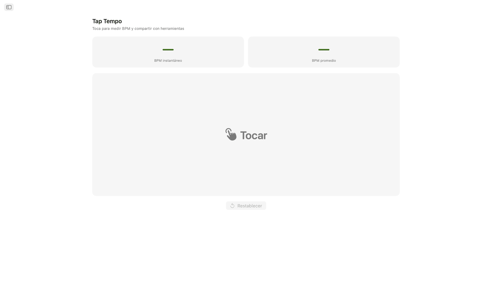
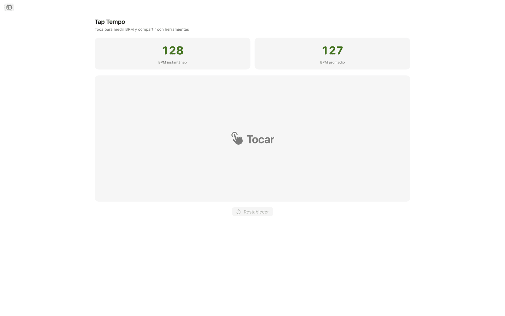
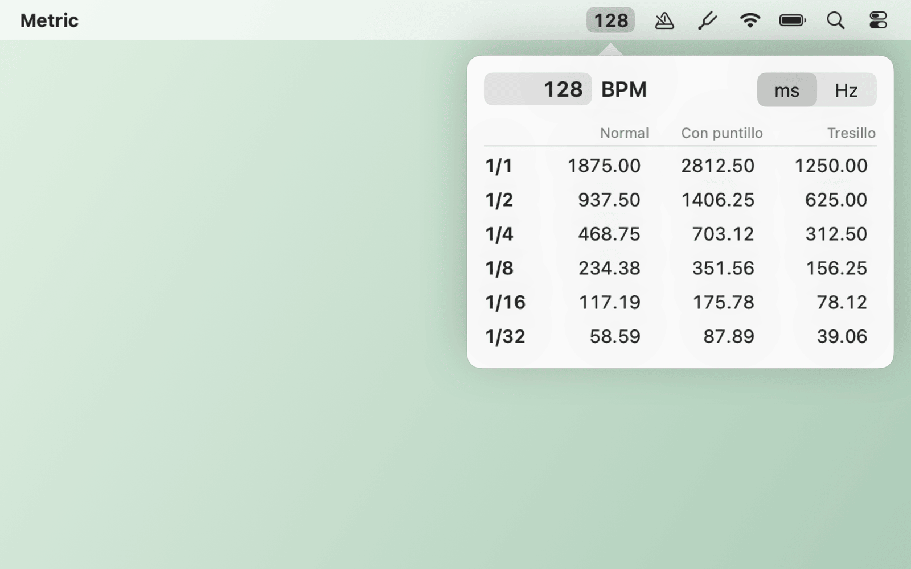
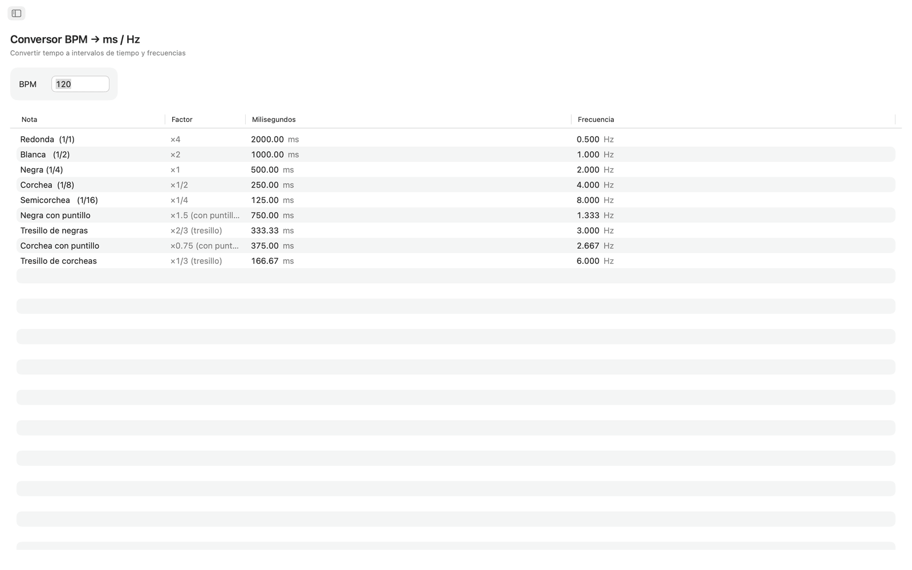
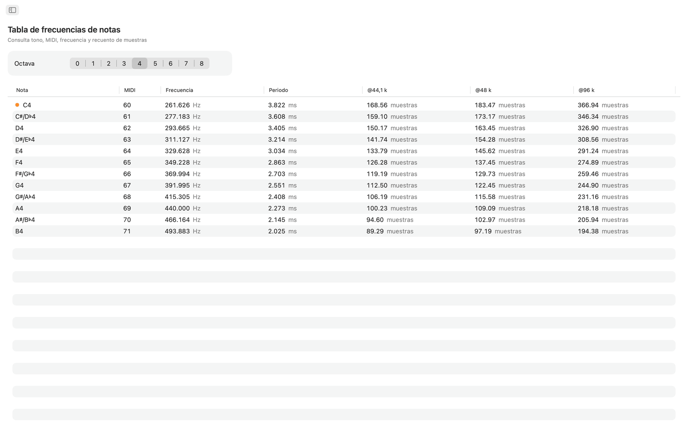
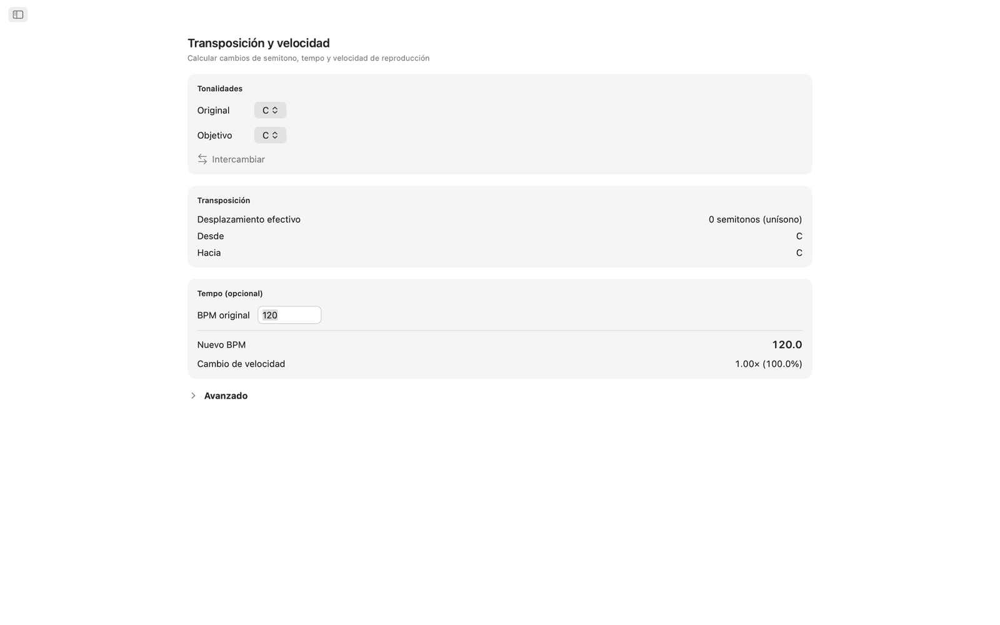
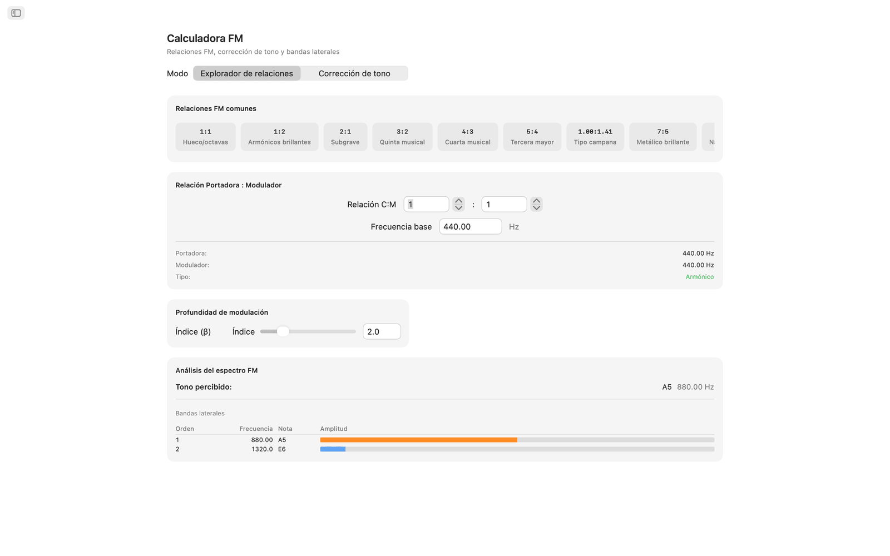
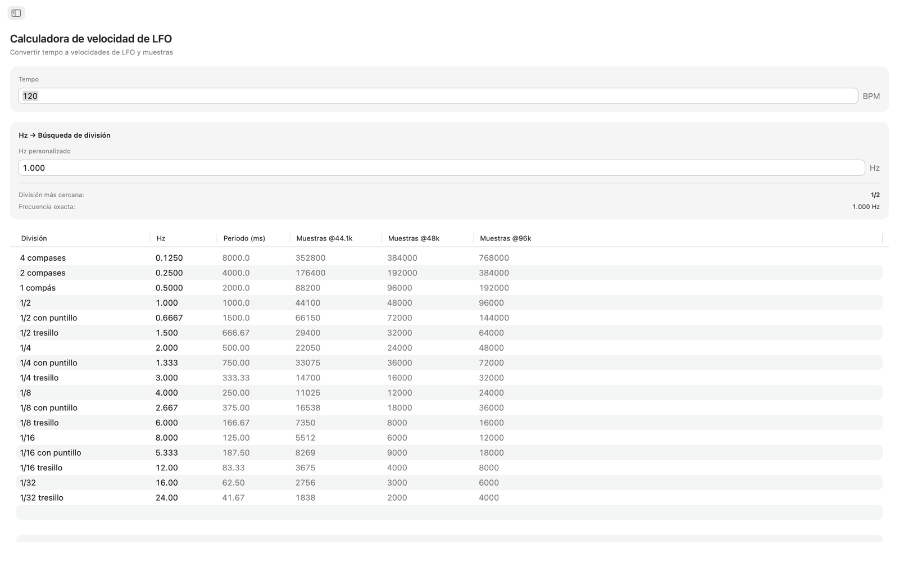
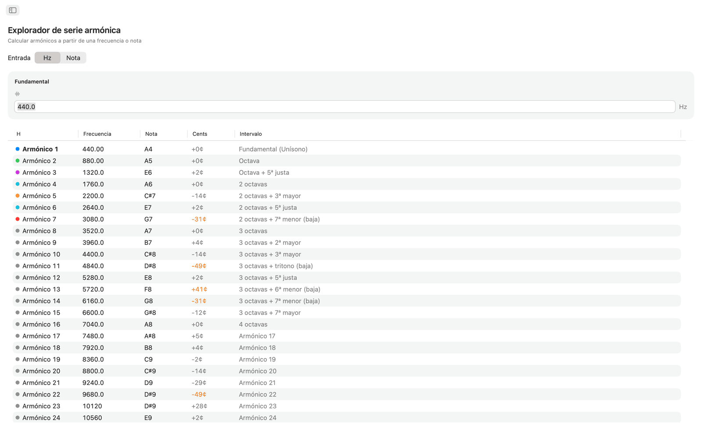
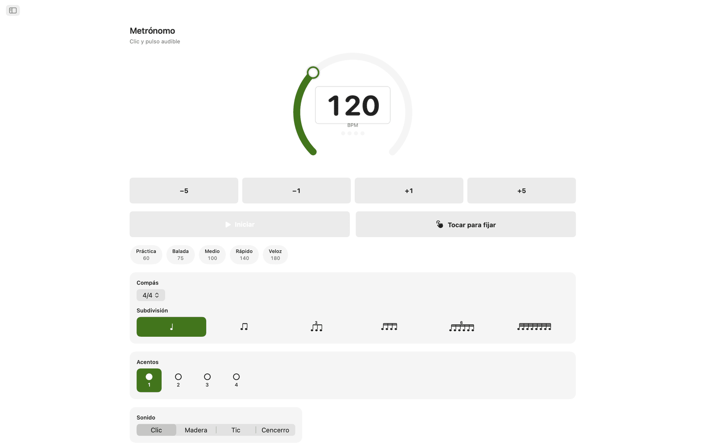
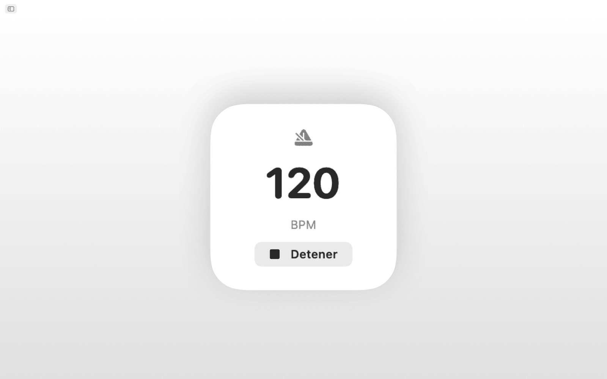
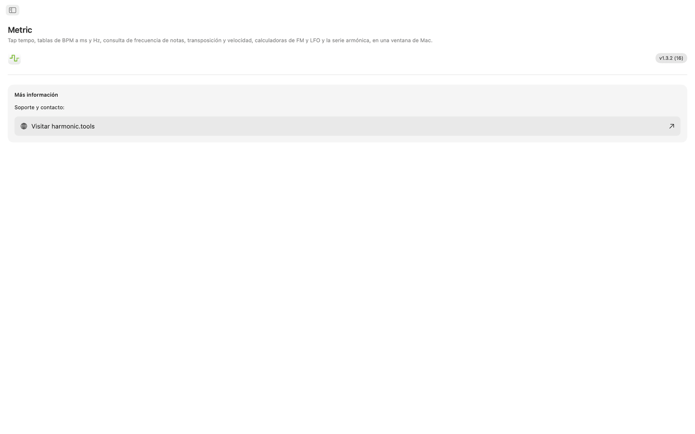
Funciones
- El metrónomo tiene un dial de tempo, tap-tempo, compases, subdivisiones y un indicador visual de pulso.
- Haga clic en el área de tap para medir el tempo. Metric muestra el BPM de su último toque y un promedio móvil de hasta ocho toques, y cualquiera de las dos lecturas puede pasar al conversor BPM, a transposición o a tasas LFO con un clic.
- El conversor BPM → ms / Hz toma un tempo y da valores normales, con puntillo y de tresillo para redondas, blancas, negras, corcheas y semicorcheas. Cada fila muestra milisegundos y Hz, de modo que puede ajustar delay, pre-delay de reverb o timing de sidechain sin calculadora.
- La tabla de frecuencia de notas recoge las 108 notas cromáticas de C0 a B8. Cada nota muestra su número MIDI, frecuencia en Hz, periodo en milisegundos y cantidad de muestras a 44,1 kHz, 48 kHz y 96 kHz. El C4 (Do central) está marcado. Basado en A4 = 440 Hz.
- Para transponer, seleccione una tonalidad de origen y una de destino y verá el desplazamiento en semitonos, el nombre del intervalo y el valor exacto de transposición del DAW. Si añade un BPM de origen, Metric calcula el nuevo tempo y la relación de velocidad de reproducción. Un control de cents (±100) y un control de velocidad de dos octavas (±24 semitonos) permiten el ajuste fino.
- La calculadora FM tiene dos modos. El explorador de relaciones establece relaciones portadora-moduladora a partir de una frecuencia fundamental y ofrece diez presets FM, desde octavas huecas (1:1) hasta campanas inarmónicas (1:π). La corrección de tono funciona a la inversa: seleccione una nota objetivo y obtenga las frecuencias exactas de portadora y moduladora. Ambos modos muestran una tabla de bandas laterales con hasta diez parciales, sus frecuencias, notas más cercanas y amplitudes codificadas por color, controladas por un control de índice de modulación.
- La calculadora de tasa LFO convierte cualquier BPM en tasas LFO a través de 17 subdivisiones musicales, de cuatro compases a tresillos de 1/32. Cada fila muestra Hz, periodo en milisegundos y muestras por ciclo a 44,1 kHz, 48 kHz y 96 kHz. La búsqueda inversa toma cualquier valor en Hz y encuentra la subdivisión musical más cercana, con el error indicado.
- El explorador de serie armónica parte de una frecuencia o de cualquier nota y enumera los primeros 32 armónicos con frecuencia, nombre de la nota más cercana, desviación en cents y nombre del intervalo. Los armónicos bajos están codificados por color, y las desviaciones superiores a 30 cents se resaltan, lo que facilita detectar contenido inarmónico.
Tempo y afinación compartidos
Marque el tempo una vez con tap-tempo y el conversor BPM, la transposición y las tasas LFO usan el mismo BPM en tiempo real. La frecuencia de notas, la calculadora FM y los armónicos usan A4 = 440 Hz.
Siri, Shortcuts y widget
Pídale a Siri que inicie o detenga el metrónomo, ajuste un BPM, marque el tempo con tap-tempo, convierta BPM a ms, encuentre la frecuencia de una nota o transponga un tempo. Cada herramienta es también una acción de Shortcuts, y el widget de BPM mantiene su tempo en el Centro de notificaciones.
Herramientas en la barra de menús
Marque el tempo con tap-tempo desde la barra de menús sin abrir la app. Con clic derecho verá los tiempos de delay en ms o Hz y podrá escribir cualquier tempo. El metrónomo y las notas son opcionales, y hay ajustes para usar solo la barra de menús y para abrir la app al iniciar sesión.
En el escritorio
- Funciona completamente sin conexión: sin cuenta, sin anuncios, sin rastreo
- App nativa de macOS con navegación por barra lateral
- Interfaz compatible con modo oscuro que sigue el tema del sistema
- Cantidad de muestras a 44,1 kHz, 48 kHz y 96 kHz
- Ventana redimensionable: déjela abierta junto a su DAW
Accesibilidad
Compatible con VoiceOver y Control por voz, y se puede usar con el teclado, con las teclas de flecha y la barra espaciadora.
Metric se puede probar gratis durante 7 días. Después, el acceso completo es una compra única, sin suscripción.